August 2024¶
Manipulated sexual arousal¶
- I head off to France to spend time in Lourdes and the Pyrenees.
- As soon as I’m out of Dénia, the intensity of the sexual arousal drops off, and then stops completely when I’m in Lourdes.
- I am, however, still extremely high and I know this because my head was swimming and spinning with constant thoughts about the trumpet teacher.
- Online harassment is ongoing, the conversation with the hacker is continuous, and I am bombarded with porn.
- Curiously, I do find myself sexually aroused in Cauterets after having my coffee on a Monday morning, and no other time specifically.
- It’s not clear why that would happen.
- Sandra Diaz often visited on a Sunday evening and she always used the toilet.
- I noticed suspicious people around the whole time I was in Cauterets and, given accessing hotel rooms is no challenge for these people, it’s likely they were coming into my room.
- Did whoever was tasked with adding the sexual-arousal drugs to my food or water do a bad job of it so that it only worked on a Monday morning, for some reason?
- Were they new and inexperienced porn-gang members?
- Did they add drugs to just one bottle of water maybe, which was finished by lunchtime on a Monday?
- It’s bound to be something like that.
The landlady changes the bank account for the rent, again¶
- Beatriz, my landlady, contacts me to inform me the bank account for the rent is changing once again.
- This is the second time in less than three years she has changed the bank account that receives the rent.
- It is my belief that Beatriz is not receiving my rent, and never was.
-
These are the three Spanish bank account numbers that I paid rent to while I was living at Carrer Furs:
ES7320950444909122412071 - from December 2021 to August 2022 (preliminary brain-damage poisoning period) ES1201280601880100047345 - from September 2022 to August 2024 (switcheroo porn period at the conservatory and with tech companies I worked for) ES6800865106190015755620 - from August 2024 onwards (the period of getting rid of me via honey-trap violent relationship with a pornographer, and when that didn't work murder) -
I wonder who these bank accounts really belong to?
- I now see why Beatriz had to have a death clause in the rental contract.
Interview with the hacker¶
- I’m in Lourdes for a week or so and then I spend the rest of the summer in Cauterets, France, up until 21st September when I return, via Madrid, to Dénia.
- I think that, significantly, it’s around this time when our little trim tab started to move the ocean liner around.
- In Lourdes, I stay at the Hotel Padoue and I have the sensation I’m being watched and followed.
- I see a woman who looks like Grace Torrellas; they have also been sending pictures of Grace-lookalikes on fake accounts.
- I remember feeling extremely high in Lourdes.
- The conversation with the hacker that started at home in Denia is ongoing.
- From time to time, I believe I am talking to the trumpet teacher I love and that he loves me back.
- Our conversation is extremely intimate, and then it seems like other voices take over the conservation to make threats, send vile porn and images of violence, and play their ridiculous terror-games.
- The change of voice is obvious to me.
- Yet, it’s hard for me to figure out what’s going on as I believe there is only one trumpet teacher, not four or more like Maria had said back in June 2022 when I met her at the conservatory.
- The whole thing felt like a puzzle I had to solve.
- I assume the strident and garish voices must be Domingo and Carmen Cano Lopez and their Spanish associates, along with Hazel and Sandra Smith and their British gang pals.
- I guess there could have been scores of people interacting with me during this time in a threatening or sexually grooming manner, indeed even colleagues.
- Perhaps the crime bosses allowed a little genuine communication with the actual man I loved to keep me interested and online, while still playing the long game where I would end up in their clutches.
- As mentioned, I communicate with the hacker directly in the following way:
- I add a message to my Twitter profile - which I then delete to write the next one, hopefully making them feel safe enough to talk to me.
- Hackers reply in the profile message of a fake account which quickly likes a post of mine so I see it immediately in notifications.
- I start to call the hacker, or the man I believe is the trumpet teacher I love, Vigas.
Why Vigas?
- The name Vigas comes from the beams interaction in May.
- I believe this is the trumpet teachers’ nickname as he has big legs.
- Vigas is the word for wooden beams in Spanish.
- Thinking back, I was shifting my tone depending on who I was talking with.
- Vigas (
@beams_game) had been utterly repugnant in retrospect but I had been out of my mind on spiked-drugs and aphrodisiacs.
Present or past tense
- I’m finding it interesting now, at Christmas 2025, that I’m using the past tense where I stayed in the present for most of this statement.
- What’s changed?
- I have a sense of safety I did not previously have now that I know the truth.
- Why use the present tense?
- Because I was still inside the prolonged trauma, the lie, reliving it constantly in the present; and also maybe because I was still being drugged in the UK so I would not find out the truth.
-
It’s curious that I spoke to all the hackers I thought were the trumpet teacher as if they were one man, but I found all but one of them repellent.
-
I write messages like this:
- “Vigas Vigas, put me in the movies. Oh wait, you did already.”
- “How quickly we went from ‘I’m a lowly school teacher to I control all the women in the Marina Alta’.”
- “Vigas Vigas, is it true what they’re saying, that the women of the Marina Alta have stopped locking their doors since you fell in love with me”.
-
A lot of it was jokes, but there was serious stuff too.
- It’s a two way conversation.
- He tells me he’s pure blood gypsy.
- He repeats, “I am a people”.
- I tell him I don’t care, I’ll learn his language.
- He tells me his family will never accept me.
- He tells me he’s married.
- I say I don’t care, I hope he’s happy, and we can all be friends.
- We talk about work and I send him job adverts for developers with salaries up to 300K; work that I should be doing with my skills and experience except the industry unilaterally hates women.
- I tell him he can go to the meetings and I’ll help him with the coding (probably should be the other way around).
- He tells me that the gangs have targeted a multitude of women, young and old, in the region and he starts sending pictures of them.
- He already told me about Rocio Vidal back in October 2023.
- I had no idea what this meant.
- Now I do.
- I understand the true nature of the state of Domingo’s female students and ask him about that.

- He confirms my fears.
- I realize that Patricia and other British women have been targeted.
- I’m terrified for Trish’s daughter and granddaughter, and realize this is why she doesn’t talk to me normally, and why her son lives for long periods in his car in the UK (.. the gangs getting rid of any men who might raise the alarm).
- It’s not Vigas, the
@beams_gameaccount, the fourth man I remember from the trumpet teacher gang that is speaking to me about these things, the tone is completely different; genuine, caring, exhausted. - I screenshot some of the women; especially the ones I see again and again.
- There is also some suggestion that the gang has been involved in targeting children online as part of the global online child-sexual-abuse pornography epidemic.
- After he talks to me about this a little, I see fake accounts with scared-looking children holding up plastic toys, or kitchen utensils, in their hands.
- I did not save or screenshot any of these.
- I’m reminded of the game they invited me to play in May and how it was attempting to lure me in.
- I sense whoever I’m talking to wants out of this dreadful life.
- I ask “How many more are you monitoring like me right now?”.

- The answer comes, two more.
- I ask him why doesn’t he just stop, put down his headphones, turn off his computer, and leave, do something else?
- He says they’ll kidnap his daughters.
Signal & Telegram harassment¶
- Since the run up to the Polygon Bali conference, I constantly receive messages on my various chat applications from weird accounts.
- I did enjoy winding them up at times, but it was relentless; missed calls, X profiles with Spanish mobile numbers, Telegram and Signal invitations to chat with fake accounts, WhatsApps from sinister-looking men I don’t know.
- At least I kept them busy.
- Here’s an example from August in which I replied to a fake account on Signal.
- At the time I thought it must be Hazel Smith.
- Reading this back today, I wonder if I was, in fact, speaking to Ugly, and he mistook it for an invitation, and took me up on it?
- I think their pit-digging got the better of them and they all thought I was talking to them personally.
Carmen Cano begging¶
- The conversation continues even when I’m out hiking.
- The day I visit the Viscos mountain, we chat again in the same way, except I am using the mobile instead of desktop.
- I find a curious parallel between a book written by Paulo Coelho based in the village of Viscos, and the strange things going on between myself and the Dénia criminals.
- I realize at the time of writing this section (July 2025) and looking back at that time that I was totally high during this period in the mountains in 2024 as well as in 2023, and probably even in 2022 and 2021.
- I had no idea I was being drugged.
- While I’m hiking up towards the Viscos peak, I see in my mind’s eye Carmen Cano on her knees begging for forgiveness or rather, begging someone, a man I believe, to take a different decision than the one they are taking which is causing her enormous upset.
- It’s such a vivid picture in my mind, and I see it repeatedly while I’m at the mountain.
- I mention Carmen in some way to the hacker I’m communicating with at that moment - who I believe to be the trumpet teacher as usual.
- There is a curt retort.
- I believe now it was Carmen Cano I was conversing with at that time.
- Seeing her prostate and humble in my mind’s eye has been somewhat helpful, especially when I bump into her and another woman coming out of my apartment building and smiling at me during an attempt at murdering me by poisoning at the end of October 2024.
The trumpet teacher sends me photos of himself and his family¶
- Whoever I’m talking to starts sending me photos of himself and his family.
- This one I believe to be of trumpet teacher number four and his family.

- His name I thought maybe Ivan after something Samuel told me about Gloria’s brother.
- I know now this is Bruno.
- It’s amazing I thought this pale Germanic-looking man was the trumpet-teacher, when seven other very Spanish-looking men turned up for classes more regularly! That is proof of the Spanish shame of brain-damaging women for country-wide macabre rape fantasies.
- The girl in the photo always looked familiar and I wonder if it is Gloria the conservatory receptionist.
- The boy the trumpet teacher has his arm around I believe to be the man that blew in my face in March.
- The hacker talks about the above picture being his lonely years; he made references to being in the navy or armed services for some time.
- The picture, if indeed of trumpet teacher number four and Gloria, would be over 40 years old.
- He made sinister references to his dad, the dark figure in the background, even to the point of suggesting he and his brother had murdered him.
- The following photo is apparently his dad again, an extremely violent man who bullied his children appallingly, I was told.

- I’m really sad for him when I hear all this.
- The photo below was sent and looks like the trumpet teacher’s son; in this case trumpet teacher number two, the Mark version.
- He also looks a lot like Sara de Pastor who joined the harmony classes in 2022-2023.
- My mother and I discuss how sad this young man looks.
- I’m not sure if anything I’m being sent is genuine.
- Nevertheless, I am delighted to receive them and I feel again a strong personal connection with whoever it is I’m communicating with.
- I believe this exuberance was manipulated online and with drugs.
- The set of photos I have now, including the two boys that always show up on Google search, make me feel like I have a decent collection of personal photos sent to me by the trumpet teacher.


- I also have the strange sensation that the brother is called Andre because the name flies by incessantly online from dodgy stalker accounts; but I could be mistaking all the Andrew references to the Greek man with a twitch from 2015.
Why would they do this?¶
- I can only assume a sick, honey-trap, violent and pornographic relationship is intended for me by Bruno, the fourth trumpet teacher, and the pictures ensure I will recognize the man when I eventually see him.
- I had walked straight past him when he attempted a personal meeting before, but I had recognized him.
- The sight of him there made me shudder.
- The interference with other men’s pictures make everything confused online.
- Were other men trying for the same thing?
- Was it open season on me?
Hidden cameras trigger¶
- One morning, I wake up and I see an account has liked one of my posts from the night before.
- It has an eagle as a profile pic; the same eagle profile pic on the account that posted about peeping at pre-schoolers in April.
- The account writes in the Hebrew language.
- I translate the pinned post.
- The writer details being targeted by someone who he had trusted, and had sex with, and was consequently stalked and filmed with secret cameras.
- The “he brought me back to him under different pretexts”, sounds like the way Domingo and Hazel lured me back to Dénia again and again.
- I think it’s a man’s voice; the trumpet teacher.
- This is the message with translation:

- I respond to this terrible tweet thread that I have just read.
- This is the first moment I start to think seriously about the possibility of hidden cameras in my apartment.
Conversations about porn¶
- The hacker starts to make references to having done porn, mainly gay porn, throughout his life.
- Video results on Google search for @1frgvn x now include gay porn.
- I feel like the trumpet teacher is baring his soul, telling me the truth about his life.
- It just seems to get worse and worse for him.
- I empathize. I do not judge him.
- He is as he is.
- It makes sense to me now that he would not judge me when I made my child sexual abuse disclosure and perhaps he saw something of himself in me at that moment.
- I tell Sandra Diaz that the trumpet teacher has told me he was in porn.
- She is horrified and asks me if I really want to be with someone like that.
- I say I don’t know but I also tell her that I’m devoted somehow; that something’s going on that I have no control over so I just have to trust that it is all part of God’s plan.
- I bet this was lies.
- Things had never gone as planned for the porn gangs of Dénia, and were continuing to spiral out of control.
I realize I have been poisoned and drugged¶
- It took a while but I finally realize why I got rhabdo at chamber music class in January 2023.
- It was something I would never have suspected.
- I had such a high regard for the teachers and staff at the conservatory.
- I tweet a message out to Domingo Cano Lopez about it.
- A hacker responds, I am so sorry.
- I start to think about my state of mind in general over the last two years.
- It’s all becoming clear to me, finally; at least the drugging and poisoning is.
- On November 1st 2024, when I’m back in Dénia, the hacker uses a fake account to tell me something about this.
- I was back home from Fátima, where I had just been fired egregiously from my job at Polygon.
- A fake account with the name Fátima pops up with the word “medico” - doctor in Spanish.
- I’m triggered to translate the profile message.


- I wonder what they’re trying to tell me; that the doctors in Dénia are poisoning people?
- Could it be true?
- There was a doctor from the hospital at the class before mine when they gave me rhabdo.
- I suspect this is also a warning to me because that last week I lived in my apartment in Dénia, sorry porn studio, I was being seriously poisoned.
- In fact, they tried to murder me that week by poisoning my water, food, toiletries, everything.
- They had also doused all my belongings in pesticides while I was away in Fátima.
- The hacker says sorry again in a similar way, in July 2025, as I’m writing to Moorfields Eye Hospital to report deteriorating peripheral vision.

- This is just before another failed murder attempt in Lourdes, carried out by a woman Domingo knows well who may be called Taya.
- They’re not at all sorry, are they.
- Do they think that saying sorry before they murder someone, or telling them what their evil plan is ten years before they carry it out, somehow absolves them?
Grooming an innocent girl into porn 101¶
- I start to see a woman on multiple fake accounts repeatedly.
- I have been seeing her probably for over a year already but only now and then.
- I think the earliest screenshot I have of her is from April 2024 but I had been seeing her for a much longer time back, probably even from back in May 2023.
- The pictures start innocently and modestly, as if she is getting some professional pictures taken.

- Perhaps her and the photographer start up a relationship and he asks for personal photos from her phone.
- The ducks are significant as this woman has been targeted by the porn gangs and is steadily being groomed and probably drugged too.
- For some reason, she is a “sitting duck”.
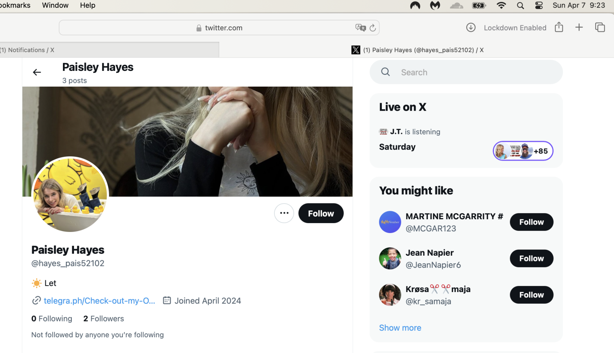
- The photos then evolve into pictures of her privately sending nudes to someone.
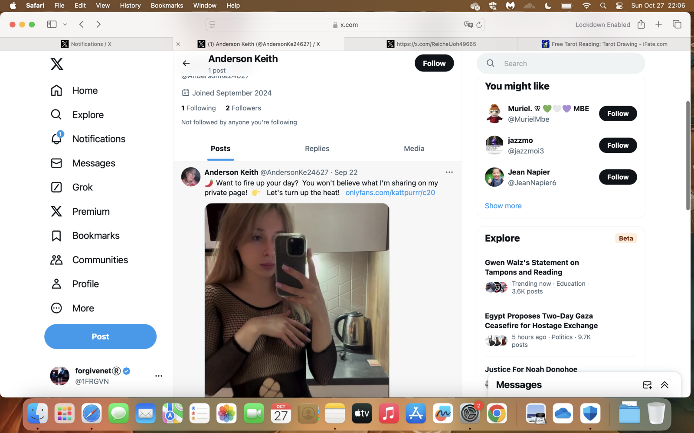
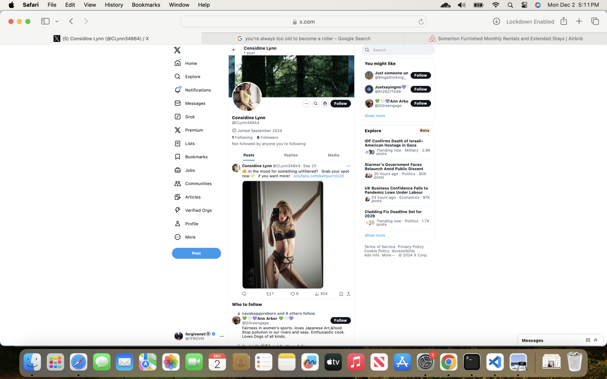
- I then see her masturbating in private and filming it on her mobile where, in my screenshot below, you can only see her head. She is completely naked.
- The professional “photo shoots” also evolve into something sexual, with more naked skin showing each time.
- The pics then appear to be part of actual porn or prostitution.
- In the first here, she is only wearing a vest top.
- I mention vest tops previously with regards to one of the children at the conservatory - Domingo’s student - wearing a vest top just like this one for the choir concert.
- Trumpet teacher number four was in the audience that evening. I saw him stand up first in the audience before everyone had finished clapping at the end.
- Finally, I see photos where the woman appears to be doing professional porn.
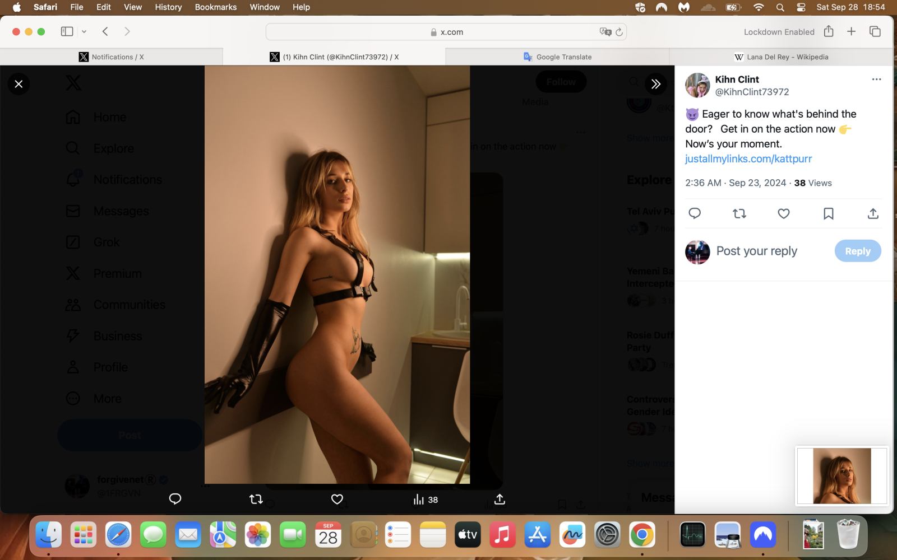
- Note the tattoo on her stomach.
- I see this tattoo again on my last walk along Las Marinas beach in October where I was so high I was hallucinating, and I was stalked and followed by middle-aged men for the whole walk which I eventually cut short it was so threatening.
- I had the presence of mind to take my hiker’s cam with me that day, and it was filming, and I believe I have images of them all.
- It was very disturbing to see this woman over and over; I’ve only posted a small selection of the images I saw of her.
- This was just the beginning of multiple women I saw in fake accounts; with images going from them privately sending nudes to ending up in a porn shoot non-consensual, sedated, and likely violent.
- The conversation with the hacker is now about these women; who they are, and how appalled I am.
- Some of the pics are of women in even more shocking scenarios.
- I ask the hacker how long it takes for them to (drug and) groom a woman like this.
- He responds; about six months.
The woman’s daughter¶
- I see this woman every day, relentlessly.
- After a few weeks of this, I start to see another woman.
- She looks young, maybe 14, and she has exactly the same facial features at the innocent woman.
- It is her daughter.
- Whoever the father is, looks like number four trumpet teacher and of all the men pretending to be Vidal Sastre Sanchez Hornero that I remember he would be the only possible father due to skin color.
- I realize that the woman was targeted over a decade ago, and they got a baby from her.
- Here she is:

- More product.
- When I see the daughter, she is in suggestive poses; post sex wearing the man’s shirt, that sort of thing.
- There were also a bunch of photos of her where she is very clearly underage, like 11 or 12.
- Are they trying to say to me - along with the sexual arousal and constant porn bombardment - look, this is what women we know do, you could do it too?
- I have a feeling that was always their end goal for me.
Having a baby with the trumpet teacher¶
- This was another set of psychological triggers and symbolism coming from their hypno-tech.
- The suggestion was that we were going to have a child, myself and the trumpet teacher.
- The manipulation was extremely powerful and while I was high I did indeed believe this.
- I saw a newborn in my arms while sitting on the sofa in Carrer Furs one evening probably at the end of April.
- They posted pictures of a boy who might have been our child grown up.
- It was relentless, again, especially over this period of intense targeting and drugging.
- It’s curious because I hadn’t considered having children at my great (not really) age, but now I am open to it in a sane and healthy way, so they shot themselves in the foot a little there.
- Also, this particularly evil form of the psychological manipulation they subject women to was now revealed, for me to report on.
- It made me start thinking about all the babies these men must have had, and for what sick purposes; especially considering the hacker had been telling me about how a big part of their recent business had been manipulating children online into porn.
- Makes Epstein & Co look like pipsqueaks.
Communication with Patricia¶
- Patricia Penny, one of the British ex-pat hikers, sends me a WhatsApp message over this period which I find a little unusual.
- Trish rarely sends me WhatsApps and in the midst of intense targeting and drugging by the porn gangs, I find it suspicious; especially the piano content and no mention of how I’ve been driven out of the conservatory in fear for my life.
- Just like everything’s normal… is it supposed to be a tiny psychological wounding?
- It is not the first time she did something like that.
- Best of luck with whatever you do next, is more than sinister if everyone’s expecting me to end up in the field with the horse.
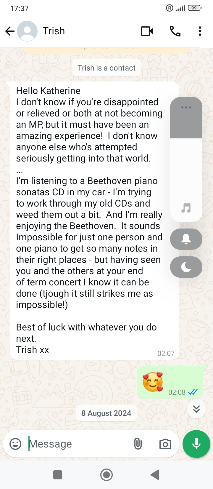
- I reply candidly.
- It’s astonishing to read these chats that reveal how something evil has gotten a hold of my mind and how I’m constantly rewriting it into love.
- Nevertheless, I know that whatever was happening to me, a very bad thing, has also happened to her.
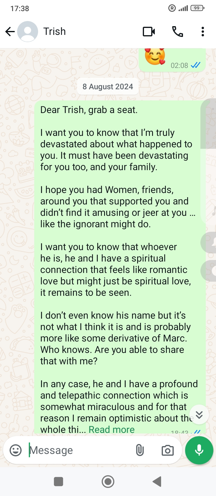
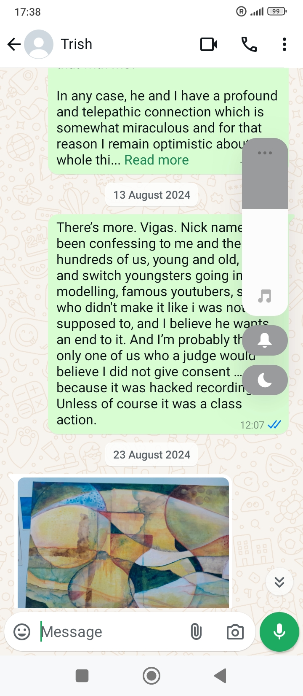
- It’s so curious I mention Marc, then Vigas.
- The random canvas she sends me looks a bit like a man and woman in bed.
- Does he have his hands around her throat?
- I wonder if it comes from a still of events at my apartment (sorry, sedated porn studio).
- Is it supposed to be another psychological wounding?
- That she completely ignores everything I have said to her, and then ignores my next messages, I find extremely sinister.
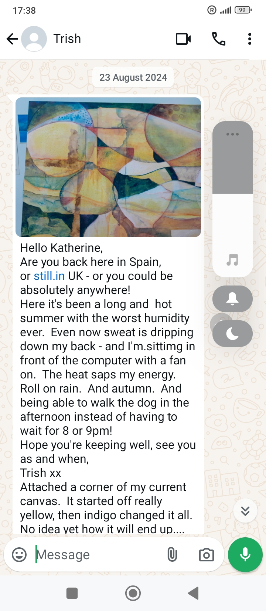
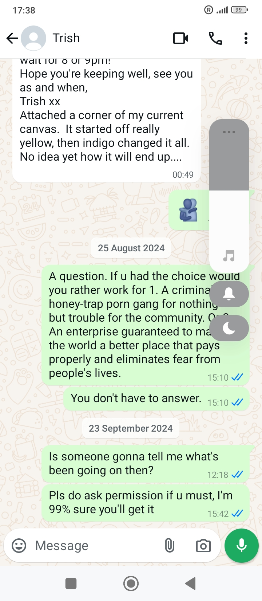
- She sounds tired and too hot to be sat at her laptop.
- Trish is in her seventies.
- I wonder if her husband is being kind to her or not.
- He’s younger than her by quite a bit, Spanish.
- I wonder what’s in the tea he brings her every morning.

- I wonder what happened to her British husband and why she married the man that probably came out to terrorize me at Halloween 2023; the man who could be a brother of trumpet teacher number four who I actually saw in my bed, thinking it must have been a dream, back in those heady nights of sedated switcheroo after chamber music class at the conservatory.
Ugly¶
- The constant cyber-stalking, porn bombardment, psychological manipulation, and all the rest of it was completely separate to the more intimate and genuine conversation I was having with someone I believed was the trumpet teacher I loved.
- Of course, I may have been supposed to think this, I thought often, until recently.
- Communication starts in a way which seems relatively private.
- Then other voices get involved; there’s a lot of piss takes and wind ups, insults, etc. And then finally there is some shocking threat of violence or similar and communication breaks down.
- I’ve detailed numerous examples of that already.
- So the same pattern had developed within this intimate conversation about the targeted women while I was seeing photo after photo of them on fake accounts.
- One evening, breaking into a communication I felt was genuine, a fake account likes one of my posts.
- I check the profile and I see an extraordinarily ugly-looking man and numerous photos of him with a young girl of about eight years old.
- It’s a classic fake account, just a few pics, all of him, some with the girl.
- He’s brown-skinned and when I think back he may have been bare-chested.
- He was wearing kilos of gold chains.
- He looks, to me, like a very evil person.
- The profile shocks me.
- I’m so appalled, I close down my laptop and go to bed.
- I do not screenshot the profile or keep a link to it.
- To be fair to the man, his ugliness looks like the result of being beaten up extraordinarily badly so that he ended up disfigured.
- Someone had intended to kill him decades ago, I guess, and failed, it looked like.
- The child with him looks exactly like Marie Fielding’s (or Henderson, Zoe BJ’s friend) young daughter.
- I don’t notice this at the time although my brain registers it today. I had assumed it was his daughter.
- Marie has two daughters, I met them back in 2012 or earlier; one was about eight and the other twelve or so.
- The photo could have been either of the daughters when they were about eight.
- A few days later, maybe even the next day, I’m at the thermal baths in Cauterets.
- This exact same man is sitting in one of the bubble chairs facing my direction.
- He’s a lot older than his photos, thinner.
- He is sitting in the same bubbly chair where I told Sandra Rita Diaz I would tame the trumpet teacher.
- He is with a younger white-skinned woman with long curly reddish hair.
- The very next day, I see them both in Lourdes.
Distract and drug activity¶
- I’m walking alongside Les Halles heading towards the high street.
- I see the ugly man and the woman he was with at the baths the evening before walking towards me.
- I’m amazed.
- He passes me quickly, leaving the woman behind him.
- She immediately looks concerned and worried, as if they’re arguing, and starts running after him.
- As she goes, she runs beside me on my right side.
- It’s textbook gypsy poisoning tactics and I wonder today if he had gone around to my left while I was distracted and popped something into my ear, as they do.
- Or maybe someone else did.
- I’m curious about what happened next, I have no recollection.
- I would recognize him again.
- This happens after I start writing the handwritten letters, because I add an extra page with details about it at the end of my original letter as it was superlatively threatening and needed mentioning.
- Did I bite your cheek love?
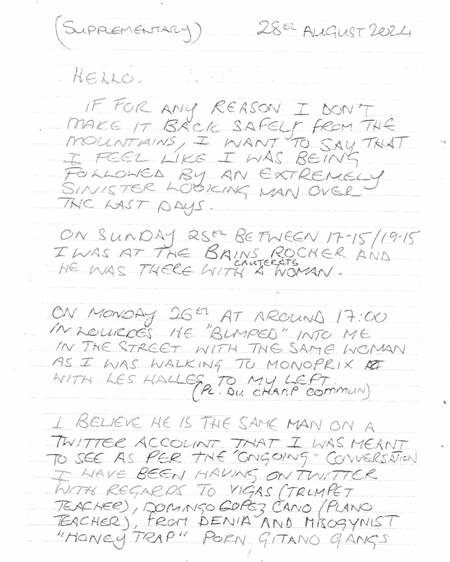
- And most curiously, I think I know who this person is.
- And was he the same ugly man I saw in Amsterdam all those years ago?
- And ChatGPT is working miracles today because that’s exactly what they were wearing!
Suspected targets¶
- I realize I’m one of hundreds, maybe thousands of targeted women and girls.
- Women and girls lured online into relationships (maybe wives, daughters, and girlfriends too) with the intention of sedated rape, conscious rape, earnings from the spy-cam porn, further blackmail and exploitation, then silencing.
- I’m seeing pictures of women that could be decades old.
- I can’t believe it’s just one man doing all this.
- I don’t know I’ve been brain damaged and it will take a miracle in September 2025 for me to realize that four or more men had turned up to the conservatory of Dénia on Monday evenings pretending to be the same one man.
- In this section, I’m publishing all the fake account profile pics that I believe could be victims.
- I understand I may have made a mistake here, and because of the constant interaction from multiple sources it’s highly likely I have.
- Perhaps, if you see someone you know in this selection of photos, you could tell us who she is and we can either eliminate her or keep her included, with maybe a name and some information.
- Also, please note that this is only a small proportion of the photos I saw.
- It was impossible to collect everything.
- It would have meant taking constant screenshots.
- It is my belief that as soon as law enforcement starts to take action on what’s been happening to me for so many years, we will find out exactly how many women, children, and babies have been targeted, and if they’re unwell, brain damaged, or murdered.
- They tried to murder me multiple times so of course there were murders.
- It’s essential we know how many were murdered and when, who they were, and where they are now.
- Someone recently told me they feed the murdered women to the pigs.
- I believe there could be hundreds of victims, maybe thousands, in Dénia alone over many decades.
- The hacker told me they were old and young, and that the British expat community and other foreign communities were the perfect targets.
- He suggested that one older woman may have dropped down dead from the shock of finding out, possibly in October 2022; that moment they let you know.
- I bet it’s not just one.
- One of the hackers stated he loved every one of them!
- Some of these photos I believe are illicit, i.e. the subject doesn’t know she is being photographed.
- Many of them, I believe, are the when she finds out content and I guess this is also a porn genre.
- If the hackers that helped me are still out there, feel free to send more in, or the ones I missed.
- I’ll post them one-by-one. Every last one of them.
Victims posted in August¶
1.¶
- This looks like a first meeting.
- Has she traveled to meet someone?
- She appears to have her overnight bag with her.
- I see photos in September which show her again with much longer hair and revealing herself a little, just like the innocent girl - see the next pic.
- The weirdest thing about this woman is I think I know her.
- Could it be my colleague from Diabetes UK who met a French bus driver and moved to France in 1999?
- The woman I knew moved to Tarbes and had two daughters with the bus driver, Emmanuel.
- Her name is Amanda.
- I went to her wedding, and myself and Byron met them both in Paris one weekend.
- A few years after, and they’d had two kids already, I met them on a trip to Lourdes. We met in Tarbes at the shopping centre for lunch.
- She told me she had been/was suffering from quite bad anxiety and depression.
- Here’s the pic from September:
- If it’s her, I saw her out of context and even though I registered the similarities, and thought about it a bit, I decided it wasn’t her: brain damage?
- Now, still, I’m not so sure.
- But here we are, and anything can happen now.
- Curiously, I was watching that documentary starring Hazel and Sandra when we worked together at Diabetes UK.
- I say watching because I saw it repeated a couple of times around the same time.
- And, I spoke about what I’d seen to Amanda and the other women working in the office relentlessly, because it had affected and upset me so much.
- In fact, Amanda would have been the person I rattled onto about this documentary the most, which is curious isn’t it.
2.¶
- I believe I also saw a profile pic of this woman in a bedroom, crouched down at the wall crying.
- The photo I saw had to be coming from a spy-cam up in the corner of the room.
- It looked a lot like one of the master bedrooms at Joan Fuster, nearly exactly like mine except a different arrangement.
- This may be a close up of that pic.
3.¶
- The profile message on this pic mentioned three blows to the head.
4.¶
- The obvious inference of the above two pics is clear and extremely disturbing.
- The account name
@fullbangamakes it even more clear. - The account is on auto-post.
- I guess it’s a go-to for the gangs when they’re knuckling down on a target.
- I felt I was being tormented with this account whenever it popped up liking a post, which was often.
- Who is she?
5.¶
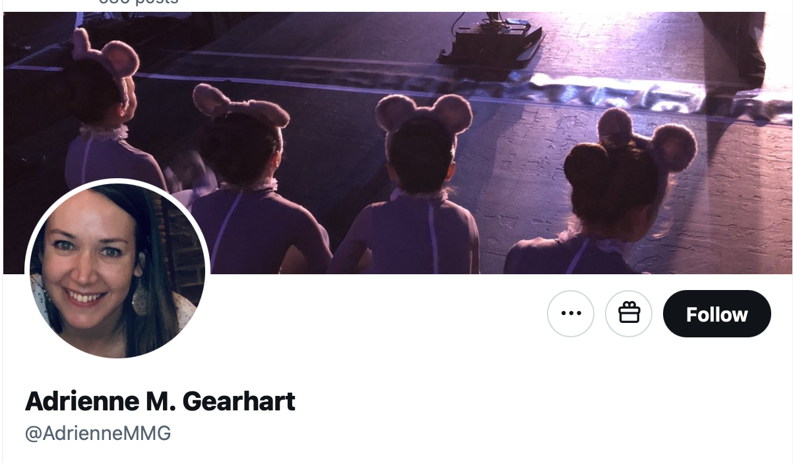
- Bunny-girl ballerinas at a photo or video shoot.
- The girls look young.
- Who is she?
6.¶
- This is Rocio Vidal, famous Spanish YouTuber who was hacked by the gangs, and, I believe, forced into doing porn for them.
- I wonder if that means porn-addicts can “request” a particular woman is targeted and, if there’s enough interest to make it financially worthwhile, they go for it.
- I saw another fake account where she is sitting on a bed, looking at the camera, about to take her top off.
- It looks like she’s been in hair-and-makeup in this photo.
- I mention Rocio Vidal throughout this statement.
- The hacker started posting this pic on my Google search results back in October 2023.
- A Spanish official confirmed to me that she had been hacked in October 2024.
7.¶
- Who is she?
8.¶
- Who is she?
9.¶
- Who is she?
10.¶
- Who is she?
11.¶
- Who is she?
- I don’t know why but I get a Benicassim feeling here… or is it a Dave Porter feeling?
12.¶
- Who is she?
13.¶
- This woman does not know she is being photographed.
- Who is she?
14.¶
- Who is she?
15.¶
- Who is she?
16.¶
- Who is she?
17.¶
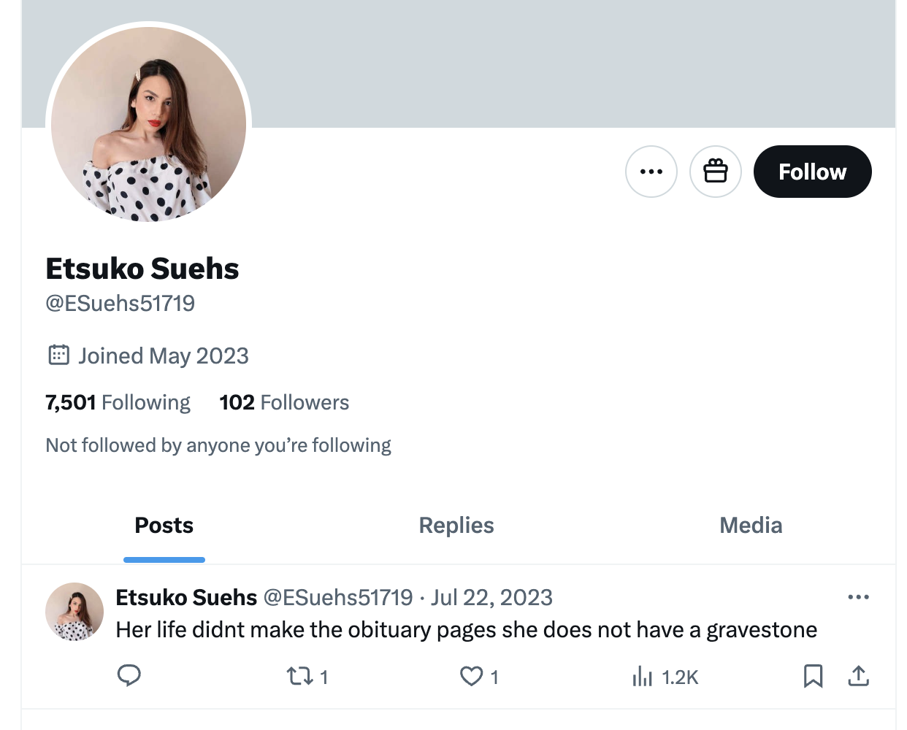
- I saw this woman dressed in the same sexy nurses outfit I saw many women wearing.
- She was on a bed about to engage in sexual activity.
- It’s not clear if she’s aware she’s being filmed.
- Note the profile message that suggests she is dead in an unmarked grave.
- I found the message extremely threatening.
- Was she murdered?
- Who is she?
18.¶

- This is Elsa, a student at the conservatory; a minor approaching majority at the time.
- She is one of Domingo Cano’s piano students.
- Note the dog collar.
- I told numerous officials about Elsa and how worried I was for her safety including: a Spanish foreign office official, the Madrid police, and I even reported her to the Spanish police’s trafficking helpline on 29th October 2024, while I was being poisoned at home, and just after meeting Inma and Paloma in Madrid.
- I did so because I was certain no-one was coming to help the children of Dénia.
- The police in Dénia did get back to me about the trafficking alert, but I was hardly going to deal with them after my experience in February 2024.
Irene, the plate lady¶
- The conversation with the hacker has become very candid and intimate.
- We are communicating about some extremely dark matters.
- I ask:
- “So who was plate lady then?”.
- An answer comes immediately:
- “Irene”.
- I immediately look her up on Google: Irene, ceramics artist, Valencia…
- And there she is.
- Except she is about 50 now: Irene Molina Pascual.
- There is absolutely no doubt in my mind.
- This is the woman I saw as a 30 year old, or younger, in photos posted on my hacked Google search in July 2023 while I was trying to figure out what was going on.
- The woman who was very obviously being filmed sexually without her knowledge, and later exploited in some way with the spy-cam photography.
- I am amazed!
- Remember: the hackers are watching everything that I do online, in real time.
- And this is a real-time conversation.
- Except, I am not sure how much they can see of the other side of the conversation - assuming multiple hackers have access to my online activity - unless I highlight it in some way.
- I say, “that’s her isn’t it?”.
- A hacker responds, “noooooooo”.
- It is undoubtedly her.
- Irene is a well known ceramics artist running her ceramics business in Onda in the Valencia region.
- I realize that the original honey-trap pattern was to target wealthy and successful women, the porn-addiction evolving into wealthy foreign women, also minor girls approaching majority, and now children and babies.
- The pictures of Irene that I saw in July 2023 on the
@jctot19and Carmen Cano’s@sinremiteaccounts were at least 20 years old. - The hacker then tells me about another lady who may have been targeted, a sportswoman in Castellon: Lidia Sanchez Puebla.
- I’m stunned.
- More recently, I believe the gangs often go for professional sportspeople.
- This is a turning-point for me.
- I have enough evidence to share and I feel it’s my responsibility to help.
- But how can I tell the world without the hackers seeing what I’m doing?
The handwritten letters¶
My cubic-centimeter of chance¶
- I write, painstakingly by hand, a letter to my friend Inma Bascones in Madrid explaining everything that’s happened.
- The letter is 20+ pages long. I don’t remember writing with a pen being this hard.
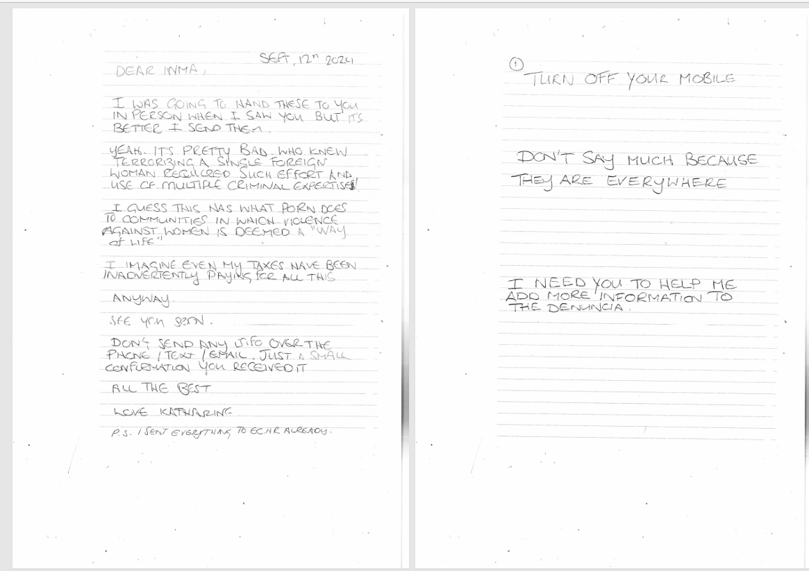
- I also copy the letter to 40+ agencies, newspapers, and well known people all over the world.
- I do this for two reasons:
- Justice for the good people of Dénia and the Marina Alta region; especially the women, children, and babies.
- To ensure my safety in some way because these people clearly have no intention of ever leaving me alone.
- Along with the letter, I send some of the pictures that I received on fake accounts that may be related.
- I send all the trumpet teacher photos.
- I make sure to include a screenshot from the YouTube video I first see online in June 2023 starring trumpet teacher number four and a drugged target (the young flautist behind him).
- I send a picture of Rocio Vidal.
- I send a copy of the first page of my police report from March.
- The conversation with the hacker continues as I do this.
- Did they know what I was doing?
- This is the extra page I wrote about Ugly after I had started writing already.
- I send the letters, all registered and guaranteed, during the first couple of weeks of September from the post office in Cauterets.
- I send Inma’s letter last as I am meeting her in Madrid shortly and I was going to hand it to her in person (hence the first page’s warning).
- I don’t think I included the supplementary page in Inma’s batch for some reason.
Making it back safely from the mountains¶
- I had written this statement in the supplementary letter because of the meeting with Ugly and the woman, and due to the intense level of online and offline threat in general.
- Pale, black-haired, wirey and pinched young men (techs) were coming in and out of the Garden & City building, making sure I’d see them.
- I would see Rocio Vidal in a week or so in one of the bars.
- I was due to climb the Vignemale and had a guide arranged.
- I was concerned something might happen to me while I was alone in the mountains.
- On the 28th August, I hiked up to the Refuge de Oulettes de Gaube to stay one night, and was due to hike up further to the Refuse Baysellance and meet my guide there.
- At dinner in the Oulettes, I met a man in his sixties who looked familiar with his teenage daughter.
- He looked a little like the conservatory student’s parent who stalked me in Cauterets in September 2022 and who had been at the choir concert in December 2022, and sitting with Katia in a conservatory online meeting in September 2023.
- He looked quite a lot like Alberto from the yoga festival in 2026.
- He also reminded me of the blond man who works at the garage in Javea where I took my car about the leak, and they made me wait ALL DAY and did nothing - perhaps they were doing something else that day.
- The man invited me to climb the Vignemale with him and his daughter in the morning.
- I explained I had a guide coming and declined.
- I also had gotten a pretty bad cold on the way up, which turned into a chest infection, and the morning I was due to climb up to the Baysellance, I was so sick I had to cancel.
- As I made my descent down, later in the morning after everyone else had gone up already, I noticed the weather becoming very very menacing at the mountain, and I was glad because it eventually looked as if it would have been perilous to go up there.
- I wonder how those two got on.
Gabriel Silva’s first team meeting as manager¶
- It’s late August and everyone is back from holiday.
- Gabriel has taken over my role as manager of the docs team at Polygon.
- The whole team is there; Anthony, Hans, myself, and Gabriel.
- Hans and Anthony are good as gold.
- Hans is particularly reverential towards Gabriel.
- I nearly guffaw.
- Gabriel announces, smiling, that he is going to be doing a bit of a switcheroo.
- And giggles.
- He then distributes all my work to Hans and Anthony, leaving me with none.
- It’s obvious to me what’s going on, apart from the switcheroo reference at this stage.
- I start thinking about what I’m going to do.
- It’s hard to get clear about what to do about anything else while I’m receiving picture-after-picture of targeted women, and trying to get the handwritten letters out to as many people as I can.
- Since understanding Gabe’s reference to switcheroo in October 2025, I wonder if he is aware that for something so vile to work, the target has to be brain-damaged so that she can’t identify objects out of context, including people.
- She also has to be continuously drugged to make her confused in situations in which those men appear.
- The woman-hating is off the scale.
- Of course, given the whole switcheroo at the conservatory thing had finished on 12th June 2023 and I was obviously still of the mind there was only one man, everyone must have thought I’d never figure it out.
- But I had been looking at actual photos of the very different-looking men who made up the switcheroo team at the conservatory since June 2023.
- It really was only a matter of time before I figured it out, and so murder is most likely the next step for women like me, and this must be understood very well by all involved.
- Time was ticking and my memory would be coming back…
- Is this the main reason behind the vicious persecution at work to get me to leave as soon as possible?
- It is certainly the main reason behind continued drugging and poisoning in Spain and the UK in 2025.
- One wonders if an absolutely certainty of my demise made my colleagues feel they could safely make references to what they knew was happening to me at the hands of a criminal gang.
- Who told everyone I’d never have the time to remember what was staring at me in the face?
- And why was everyone OK with what was happening to me?
- I have to thank Gabriel for using this term so egregiously; because it was the first thing I remembered after realizing there were at least four distinct trumpet teachers at the conservatory (and in my apartment while I was sedated).
Reprimanding me¶
- Soon after, in a one-to-one, Gabriel tells me I’m being watched carefully by Jonathan Tamblyn in HR, and the business in general, for taking too much holiday.
- Was Jonathan aware of what was going on too?